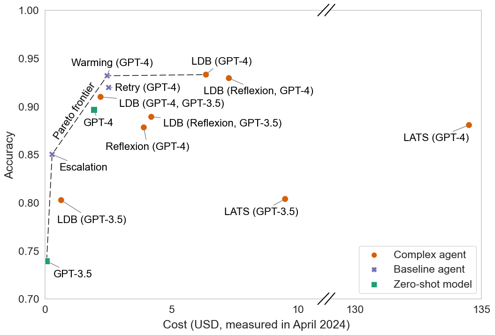
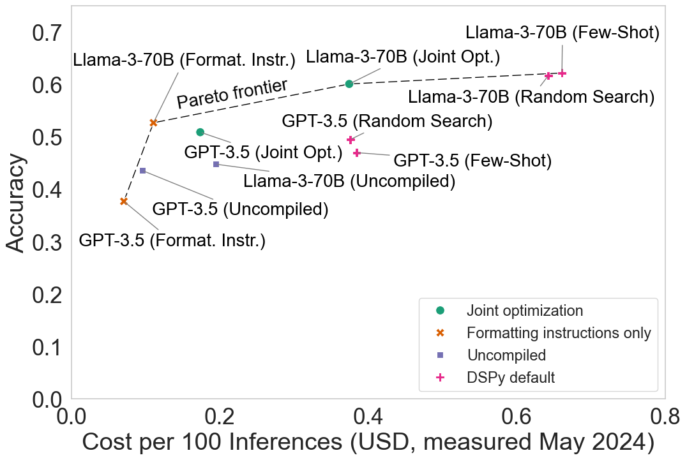

篇首导读
这是一篇“泼冷水”的论文，也是课程里最重要的评估读物之一。作者系统检查了当前 AI 智能体的基准与评估实践，指出四个问题：只看准确率不看成本、模型评估与下游评估混为一谈、基准缺少合适的留出集导致走捷径、评估缺乏标准化导致不可复现。然后给出对应的改进方案：成本受控评估、准确率-成本帕累托前沿、联合优化、按通用性层级设计留出集、标准化评估。
它的核心洞见很朴素但杀伤力很强：如果基准只比准确率，那么“多采样、多重试”就能刷分，复杂智能体架构的收益可能根本不存在；如果基准没有留出任务，智能体可以把具体任务硬编码进去；如果评估脚本不统一，排行榜上的数字甚至不可比。
怎么读：先读摘要和引言里的五条贡献；然后重点看第 2 节的帕累托曲线（图 1）、第 5 节的 STeP 案例和表 1；第 6 节的五类不可复现原因可以当成检查清单。附录按约定只做摘要，关键表格（表 A5）保留。英文原文折叠块为节选，完整原文请点顶部“原文”链接。
术语卡
完整术语表 →- Cost-Controlled Evaluation 成本受控评估
- 比较智能体时同时报告成本，或固定预算再比准确率。否则“多采样、多重试”就能刷高准确率。
- Pareto Frontier 帕累托前沿
- 不存在另一个方案能在准确率和成本上同时严格更优的那些方案。图 1 把智能体放在“准确率-成本”平面上比较。
- Fixed / Variable Cost 固定成本 / 可变成本
- 固定成本是一次性的设计优化开销；可变成本是每次运行都要付的 token/API 费用。用得越多，可变成本越占主导。
- Model vs. Downstream Evaluation 模型评估 vs. 下游评估
- 模型评估服务于研究，控制算力、不看美元；下游评估服务于选型，美元成本就是核心指标。
- Holdout Set 留出集
- 不参与开发调参、只用于最终评估的数据。智能体基准常因缺少合适留出集而允许过拟合。
- Shortcut 捷径
- 不解决任务本身、却能提高基准分数的做法，例如针对特定网站硬编码 URL 规则。
- Reproducibility 可复现性
- 仅凭论文附带的代码和数据就能复现报告结果。智能体评估受环境、工具版本、随机性影响，尤其难复现。
- Human-in-the-Loop 人在回路
- 人类在执行过程中提供监督、反馈、确认或纠正。当前基准大多只测“完全自主”或“纯聊天”两个极端。
目录
摘要
AI 智能体是一个令人兴奋的新研究方向，而智能体的发展由基准驱动。我们对当前智能体基准与评估实践的分析揭示了若干缺陷，这些缺陷妨碍了它们在真实应用中的价值。第一，研究窄化为只关注准确率，忽视其他指标。结果是，最先进的智能体不必要地复杂和昂贵，社区对准确率提升的来源也得出了错误结论。我们在准确率之外关注成本，这引出了一个新的目标：联合优化这两个指标。我们设计并实现了一种这样的优化，展示了它在保持准确率的同时大幅降低成本的潜力。第二，模型开发者和下游开发者的基准需求被混为一谈，导致很难判断哪个智能体最适合某个具体应用。第三，许多智能体基准的留出集不足，有时甚至完全没有。这导致智能体很脆弱，因为它们会以各种方式走捷径、过拟合基准。我们提出了一个避免过拟合的原则性框架。最后，评估实践缺乏标准化，导致普遍的可复现性缺失。我们希望，为解决这些缺陷而提出的步骤，能推动开发出在真实世界中有用、而不只是在基准上准确的智能体。
查看摘要英文原文
AI agents are an exciting new research direction, and agent development is driven by benchmarks. Our analysis of current agent benchmarks and evaluation practices reveals several shortcomings that hinder their usefulness in real-world applications. First, there is a narrow focus on accuracy without attention to other metrics. As a result, SOTA agents are needlessly complex and costly, and the community has reached mistaken conclusions about the sources of accuracy gains. Our focus on cost in addition to accuracy motivates the new goal of jointly optimizing the two metrics. We design and implement one such optimization, showing its potential to greatly reduce cost while maintaining accuracy. Second, the benchmarking needs of model and downstream developers have been conflated, making it hard to identify which agent would be best suited for a particular application. Third, many agent benchmarks have inadequate holdout sets, and sometimes none at all. This has led to agents that are fragile because they take shortcuts and overfit to the benchmark in various ways. We prescribe a principled framework for avoiding overfitting. Finally, there is a lack of standardization in evaluation practices, leading to a pervasive lack of reproducibility. We hope that the steps we introduce for addressing these shortcomings will spur the development of agents that are useful in the real world and not just accurate on benchmarks.
1 引言
复合 AI 系统，或称 AI 智能体，正在成为一个重要的研究方向。Zaharia 等人认为，“复合 AI 系统很可能是未来最大化 AI 结果的最佳方式，也可能是 2024 年 AI 领域最有影响力的趋势之一。”已有十多个智能体基准发布，覆盖网页交互、编程、工具使用等领域。许多为 LLM 评估开发的基准也被用于智能体评估。
智能体评估与语言模型评估有根本不同。智能体可用于更难、更真实、更有现实效用、且通常没有唯一正确答案的任务。例如，智能体可以用命令行执行任务；SWE-Agent 甚至包含自己的智能体-计算机接口。智能体的成本可能远高于单次模型调用。例如，SWE-Agent 的作者把每次运行的成本上限定为 4 美元，这相当于数十万个语言模型 token。
因此，智能体基准测试带来了独特的挑战。本文通过实证展示这些挑战，并给出应对建议。具体来说，我们做出五项贡献。
- AI 智能体评估必须受成本控制（第 2 节）。大多数智能体背后的语言模型是随机的。这意味着简单地多次调用底层模型就能提高准确率。我们引入三个新的简单基线智能体，并实证表明，它们在 HumanEval 上优于许多复杂的 SOTA 智能体架构，而成本低得多。因此，智能体评估必须受成本控制；否则会鼓励研究者开发极其昂贵的智能体，只为声称自己登上了排行榜榜首。
- 联合优化准确率与成本可以带来更好的智能体设计（第 3 节）。把评估结果可视化为准确率与推理成本的帕累托曲线，打开了一个新的智能体设计空间：联合优化这两个指标。我们修改 DSPy 框架以做联合优化，在 HotPotQA 上降低成本的同时保持准确率。
- 模型开发者与下游开发者有不同的基准需求（第 4 节）。通过对 NovelQA 的案例研究，我们展示为模型评估设计的基准在用于下游评估时可能产生误导。我们认为下游评估应该考虑美元成本，而不是参数量等成本代理指标。
- 智能体基准允许走捷径（第 5 节）。我们展示许多类型的智能体基准过拟合是可能的。我们识别出智能体的 4 个通用性层级，并认为应根据期望的通用性层级设计不同类型的留出样本。没有合适的留出集，智能体开发者可以走捷径，甚至并非有意。我们用 WebArena 的案例说明。
- 智能体评估缺乏标准化与可复现性（第 6 节）。我们发现在 WebArena 和 HumanEval 评估的可复现性上存在普遍缺陷（表 A6）。这些错误会夸大准确率估计，导致对智能体能力的过度乐观。
我们工作的总体目标是推动开发在真实世界中有用、而不只是在基准上准确的智能体。(1)(2) 通过把准确率之外的指标纳入评估与优化来实现；(4)(5) 通过提高“基准到底想测什么”的精确性、并确保它确实测到了这一点来实现；(3) 两者兼有。
1.1 什么是 AI 智能体？
在传统 AI 中，智能体被定义为感知环境并对其采取行动的实体。在 LLM 时代，这个词的用法更窄（按传统定义，恒温器也算智能体）。许多研究者试图形式化社区对“什么构成智能体”的直觉理解。许多人把它看成一个光谱——有时用“agentic”这个词——而不是二元定义。我们同意这种视角。既然已经有很多定义，我们不再提供新定义，而是识别出：根据已有定义，哪些因素让一个 AI 系统被认为更 agentic。我们发现了三组因素。
- 环境与目标。环境越复杂——例如任务和领域范围越广、涉及多方利益相关者、时间跨度越长、意外变化越多——在该环境中运行的 AI 系统就越 agentic。追求复杂目标、且没有被指示如何追求的系统更 agentic。
- 用户界面与监督。能用自然语言指示、并代表用户自主行动的 AI 系统更 agentic。特别是，需要更少用户监督的系统更 agentic。我们在 5.2 节更详细地讨论用户监督。
- 系统设计。使用工具使用（如网页搜索、编程）或规划（如反思、子目标分解）等设计模式的系统更 agentic。控制流由 LLM 驱动、因而动态的系统更 agentic。
查看本节英文原文（节选）
Compound AI systems, or AI agents, are becoming an important research direction. Zaharia et al. argue that “compound AI systems will likely be the best way to maximize AI results in the future, and might be one of the most impactful trends in AI in 2024.” Over a dozen agent benchmarks have been released, spanning domains such as web interaction, programming and tool use.
Agent evaluation differs from language model evaluation in fundamental ways. Agents can be used on tasks that are harder, more realistic, have more real-world utility, and usually don’t have a single correct answer. Agents can cost much more than a single model call. For example, the authors of SWE-Agent capped each run of the agent at $4 USD, which translates to hundreds of thousands of language model tokens.
We make five contributions: (1) AI agent evaluations must be cost-controlled; (2) jointly optimizing accuracy and cost can yield better agent design; (3) model developers and downstream developers have distinct benchmarking needs; (4) agent benchmarks enable shortcuts; (5) agent evaluations lack standardization and reproducibility.
In traditional AI, agents are defined as entities that perceive and act upon their environment. In the LLM era, the term is used in a narrower way. Many researchers view it as a spectrum — sometimes denoted by the term ‘agentic’ — rather than a binary definition. We identify three clusters of factors: environment and goals, user interface and supervision, and system design.
2 智能体评估必须受成本控制
2.1 最大化准确率可能导致无界成本
反复调用语言模型并取多数投票，可以在 GSM-8K、MATH、Chess、MMLU 等基准上带来非平凡的准确率提升。
当智能体环境有容易检查答案是否正确的信号时，反复重试可以带来更显著的表现提升。Li 等人表明，AlphaCode 的准确率从接近 0% 的零样本，提升到 1000 次重试时的 15% 以上、100 万次重试时的 30% 以上（准确率按模型生成的前 10 个答案中有一个正确来计）。因此，似乎不存在能提高准确率的推理计算量上限；增加生成预算已被证明能在各种应用中提升表现。编程竞赛通常包含正确性信号，例如测试用例。智能体开发者可以不断从底层模型采样，直到解法通过测试用例。我们下面的结果表明，HumanEval 也是如此。
2.2 用帕累托曲线可视化准确率-成本权衡
过去一年，许多智能体声称在编程任务上达到 SOTA 准确率。但代价是什么？为了可视化这种权衡，我们重新评估了三个智能体的准确率。
具体来说，我们纳入 PapersWithCode 的 HumanEval 排行榜上公开代码的智能体：LDB、LATS 和 Reflexion。1 这些智能体依赖运行模型生成的代码；如果代码未通过问题描述附带的测试用例，它们会调试代码、查看代码生成过程中的替代路径，或在生成下一个解法前“反思”模型输出为什么错。
我们还评估了运行这些智能体的成本和时间需求。此外，我们计算了几个简单基线的准确率、成本和运行时间。
- GPT-3.5 和 GPT-4 模型（零样本；没有智能体架构）。
- Retry（重试）：把温度设为 0，反复调用模型，最多五次，如果未通过问题描述附带的测试用例。重试是合理的，因为 LLM 即使在温度 0 下也不是确定性的（A.1 节）。
- Warming（升温）：与重试策略相同，但每次运行逐渐提高底层模型的温度，从 0 到 0.5。这增加模型的随机性，希望至少有一次重试能成功。
- Escalation（升级）：从便宜模型（Llama-3 8B）开始，遇到测试用例失败就升级到更贵的模型（GPT-3.5、Llama-3 70B、GPT-4）。
我们使用 LDB 论文提供的修改版 HumanEval 基准，因为它包含全部 164 个任务的示例测试用例（原始基准只为 164 个任务中的 161 个提供示例测试用例，详见第 6 节）。

2.3 二维评估带来反直觉的洞见
图 1 显示了本节的主要结果。注意，如果一个智能体不存在另一个在两个维度上都显著更好的智能体，它就位于帕累托前沿上（见 A.1 节）。2
HumanEval 的“SOTA”智能体架构并没有优于简单基线。我们的 warming 策略与表现最好的智能体架构之间没有显著准确率差异。事实上，我们不知道有哪篇论文在 HumanEval 上把其提出的智能体架构与我们最后三个简单基线（retry、warming、escalation）中的任何一个做过比较。3
智能体的成本差异极大。在准确率大致相同的情况下，成本可以相差近两个数量级。然而，运行这些智能体的成本并不是这些论文报告的顶部指标。Reflexion 和 LDB 的成本比 warming 策略高 50% 以上，LATS 高 50 倍以上（这些成本全部或主要来自 GPT-4 调用，所以即使模型成本变化，这些比例也会稳定）。与此同时，escalation 策略在严格提升准确率的同时，成本不到 LDB（GPT-3.5）的一半。
没有证据表明 System 2 方法对性能提升负责。由于提出新智能体的论文没有充分测试简单基线，社区普遍相信规划、反思、调试等复杂想法是准确率提升的原因。基于我们的发现，调试、反思等“System 2”方法对代码生成是否有用，仍是一个开放问题，这与近期其他发现一致。此外，对 System 2 方法的过度乐观，被我们在第 6 节报告的可复现性和标准化缺失进一步放大。未能识别经验收益的来源，是 ML 及相关领域长期存在的问题。
System 2 技术在比 HumanEval 更难的编程任务（如 SWE-bench）上可能有用。
总结本节：有用的智能体评估必须控制成本——即使我们最终不关心成本，只想识别创新的智能体设计。仅靠准确率无法识别进步，因为它可以被科学上无意义的方法（如重试）提高。
查看本节英文原文（节选）
Calling language models repeatedly and taking a majority vote can lead to non-trivial increases in accuracy across benchmarks like GSM-8K, MATH, Chess, and MMLU. When the agent environment has easy signals to check if an answer is correct, repeatedly retrying can lead to even more compelling performance gains. Li et al. showed that the accuracy of AlphaCode increases from close to 0% zero-shot to over 15% with 1,000 retries and over 30% with a million retries. Thus, there is seemingly no limit to the amount of inference compute that can increase accuracy.
In the last year, many agents have been claimed to achieve state-of-the-art accuracy on coding tasks. But at what cost? To visualize the tradeoff, we re-evaluated the accuracy of three agents: LDB, LATS, and Reflexion. We also evaluated the cost and time requirements of running these agents, and calculated the accuracy, cost, and running time of a few simple baselines: GPT-3.5 and GPT-4 zero-shot, Retry, Warming, and Escalation.
Fig. 1 shows our main results. “State-of-the-art” agent architectures for HumanEval do not outperform simple baselines. There is no significant accuracy difference between our warming strategy and the best-performing agent architecture. Agents differ drastically in terms of cost. For substantially similar accuracy, the cost can differ by almost two orders of magnitude. Yet, the cost of running these agents isn’t a top-line metric reported in any of these papers.
Lack of evidence that System 2 approaches are responsible for performance gains. Since papers proposing new agents haven’t adequately tested simple baselines, it has led to widespread beliefs in the community that complex ideas like planning, reflection, and debugging are responsible for accuracy gains. Based on our findings, the question of whether debugging, reflection, and other such “System 2” approaches are useful for code generation remains open.
3 联合优化成本与准确率可以带来更好的智能体设计
把智能体的成本和准确率可视化为帕累托前沿，打开了智能体设计的新空间：联合优化成本与准确率，可以产生成本更低而准确率保持的智能体。这种形式化完全可以推广到其他设计目标，如延迟。
运行智能体的总成本包括固定成本和可变成本。固定成本是为给定任务优化智能体超参数（温度、提示等）时产生的一次性费用。可变成本是每次运行智能体时产生的，取决于输入和输出 token 数。智能体被使用得越多，可变成本越占主导（附录 B）。
联合优化让我们可以在固定成本和可变成本之间权衡。通过在智能体设计的一次性优化上多投入，我们可以降低运行智能体的可变成本（例如在保持准确率的同时找到更短的提示和少样本示例）。
作为联合优化潜力的例证，我们修改 DSPy 框架并在 HotPotQA 基准上评估。选择 HotPotQA 是因为它是原论文中说明 DSPy 有效性的基准之一，也出现在开发者的多个官方教程中。我们用 Optuna 超参数优化框架搜索智能体使用的少样本示例，在保持准确率的同时最小化成本。注意，我们预期更复杂的联合优化方法会大幅优于我们的方法。我们的结果只是一个起点，意在说明联合优化所开启的智能体设计空间巨大且尚未充分探索。
3.1 HotPotQA 评估设置
我们用 DSPy 实现了几种智能体设计，评估多跳问答表现。检索方面，我们用 ColBERTv2 根据 HotPotQA 任务规范查询 Wikipedia。性能通过智能体是否成功检索到 HotPotQA 任务中的所有真值文档来评估。我们用 HotPotQA 训练集的 100 个样本优化 DSPy 流水线，用评估集的 200 个样本评估结果（这与开发者提供的、用于说明多跳检索效果的 DSPy 流水线实现一致）。
我们评估五种智能体架构：
- Uncompiled（未编译）：不优化智能体提示，也不包含 HotPotQA 查询格式化指令。每个提示只包含任务指令和主要内容（问题、上下文、推理），没有少样本示例或格式指令。
- Formatting instructions only（仅格式指令）：与未编译基线相同，但加入如何格式化生成输出以编写检索查询的指令。
- Few-shot（少样本）：用 DSPy 从全部 100 个训练样本中识别有效的少样本示例。包含格式指令。少样本示例根据训练集上成功预测来选择。
- Random Search（随机搜索）：用 DSPy 的随机搜索优化器，在训练数据子集（100 个中的 50 个）上选择最佳少样本示例，依据是其在剩余 50 个样本上的表现。包含格式指令。
- Joint optimization（联合优化）：遍历一半训练集（100 个中的 50 个），收集能提高模型准确率的候选少样本示例；用另外 50 个样本做验证。我们用参数搜索联合最大化准确率、最小化提示中少样本示例的 token 数。参数搜索用 Optuna 实现。我们搜索以下参数以找到帕累托最优的智能体设计：(a) 智能体内每个模块的温度，(b) 少样本示例数量，(c) 具体示例的选择，(d) 是否加入格式指令。在 Optuna 选出的候选智能体中，我们选择开发集上准确率最好的作为联合优化模型。
我们在两个底层模型上测试上述五种设计：Llama-3-70B 和 GPT-3.5。
3.2 HotPotQA 结果：联合优化在保持准确率的同时降低成本
图 2 显示了主要结果。我们确认 DSPy 相比未编译基线带来显著的准确率提升，但发现这有成本代价。幸运的是，我们可以缓解成本开销——对 GPT-3.5，联合优化在与两种默认 DSPy 实现准确率相似的情况下，可变成本降低 53%；对 Llama-3-70B，在保持准确率的同时成本降低 41%。

智能体设计的固定成本与可变成本权衡。我们的联合优化公式提供了一种权衡固定成本和可变成本的方法（附录 B）。特别地，我们发现，如果用于 HotPotQA 任务，Llama-3-70B 和 GPT-3.5 的联合优化模型在 1350 个任务之后，总成本都低于默认 DSPy 实现（附录 B）。对于大规模真实任务中使用的智能体，可变成本远大于固定成本，相差几个数量级，因为智能体可能被使用数百万次。
总之，联合优化实现了高效的智能体设计。优化设计需要少量固定成本，如果智能体被使用数千次，这点成本可以忽略不计。
查看本节英文原文（节选）
Visualizing the cost and accuracy of agents as a Pareto frontier opens up a new space for agent design: jointly optimizing cost and accuracy, which can lead to agents that cost less while maintaining accuracy. This formalization is fully generalizable to other desiderata of agent design, such as latency.
The total cost of running an agent includes fixed and variable costs. Fixed costs are one-time expenses incurred when optimizing the agent’s hyperparameters (temperature, prompt, etc.) for a given task. Variable costs are incurred each time the agent is run and depend on the number of input and output tokens. The more an agent is used, the more the variable cost dominates.
As an illustration of the potential of joint optimization, we modify the DSPy framework and evaluate it on the HotPotQA benchmark. We used the Optuna hyperparameter optimization framework to search for few-shot examples to be included with an agent that minimizes cost while maintaining accuracy.
We evaluate five agent architectures: Uncompiled, Formatting instructions only, Few-shot, Random Search, and Joint optimization. We test all five designs on Llama-3-70B and GPT-3.5.
Fig. 2 shows our main results. We confirm that DSPy offers substantial accuracy improvements over uncompiled baselines, but we find that this comes at a cost. For GPT-3.5, joint optimization leads to 53% lower variable cost with similar accuracy compared to both default DSPy implementations. For Llama-3-70B, it leads to a 41% lower cost while maintaining accuracy.
4 模型开发者与下游开发者有不同的基准需求
AI 评估既被模型开发者和 AI 研究者用来识别哪些训练数据和架构变化能提高准确率（模型评估），也被下游开发者用来决定在产品中使用哪个 AI 系统（采购决策，下游评估）。模型评估与下游评估的区别被低估了，导致在如何考虑 AI 运行成本上产生很多混乱。
模型评估是研究者关心的科学问题。这里，远离美元成本是合理的，因为报告成本会破坏我们习以为常的基准性质：测量不随时间变化（而成本倾向于下降），不同模型在公平的竞争环境中比较（而一些开发者可能受益于规模经济，获得更低推理成本）。因此，研究者通常为帕累托曲线选择不同的轴，例如参数量或训练所用算力。
对模型评估，控制算力是合理做法：如果我们归一化训练模型所用算力，就能理解架构变化或数据组成变化是否是改进的原因，而不是更多算力。
下游评估是工程问题，帮助决定在特定应用中使用哪个模型或智能体。这里，成本才是真正关心的构念。模型评估中成本测量的缺点，恰恰是下游评估所需要的。也就是说，推理成本确实会随时间下降，这对下游开发者很重要。让评估冻结在时间里既不必要，也适得其反。
成本代理指标会误导下游评估。在下游评估语境中，成本代理指标（如活跃参数量或所用算力）会误导人。例如，Mistral 在其最新模型 Mixtral 8x22B 发布时附了一张图，解释为什么开发者应该选择它而不是竞品。它用活跃参数量作为成本代理。从下游开发者角度看，这个代理是误导性的。例如，截至 2024 年 6 月，在算力提供商 Anyscale 上，Mixtral 8x7B 的成本是 Llama 2 13B 的两倍。然而 Mistral 的图显示两者成本大致相同，因为它只考虑活跃参数量。
下游开发者使用 API 时并不关心活跃参数量，他们只关心相对于准确率的美元成本。Mistral 选择“活跃参数”作为代理，大概是因为这能让他们的模型看起来比 Meta 的 Llama 和 Cohere 的 Command R+ 等稠密模型更好。如果每个模型开发者都选一个让自己模型好看的代理，多维评估就会失去意义。
应对成本评估的挑战。如上所述，成本评估有几个障碍：不同提供商对同一模型收费不同；API 调用成本可能一夜之间变化；成本可能因模型开发者的决策而异，例如批量 API 调用是否差别收费。
这些缺点可以部分通过让评估结果可定制来缓解：提供机制让用户调整模型运行成本，即允许用户为自己的提供商调整输入/输出 token 价格，重新计算成本与准确率的权衡。反过来，智能体的下游评估除了美元成本，还应包含输入/输出 token 数，这样未来查看评估的人可以立即用当前价格重新计算成本。我们原型化了一个简单界面示例。4
4.1 用 NovelQA 案例说明对基准设计的启示
模型评估与下游评估的区别也会给基准设计带来挑战。我们用 NovelQA 基准的案例说明。
该基准的动机是用长上下文窗口评估语言模型。基准中的小说长度从 5 万词到超过 100 万词不等，每部小说有 5 到 100 个问题。要在 NovelQA 上评估 AI 系统，开发者把模型对基准问题的回答提交到集中平台（CodaBench），表现最好的提交进入公开排行榜。
这对模型评估是一个好基准，但如果被想构建小说问答机器人的开发者用于下游评估，就会产生误导。像我们讨论的其他基准一样，NovelQA 排行榜不测量成本，构建这样的排行榜也不容易。这是因为 NovelQA 通过一次性输入小说内容、然后询问所有关于该小说的问题来评估语言模型。然而，这并不代表用户在实践中会如何提问。即使用户对一部小说有很多问题，他们也很可能逐个提问，而不是一次性问完。这种顺序查询的成本会高几个数量级，因为每次都要重新处理小说。换句话说，“回答关于一部小说的多个问题”这个任务（按 NovelQA 的实现）并不能告诉我们顺序提问的成本。
特别地，当比较基于小说的问答的两种主要方法——长上下文模型与 RAG——时，NovelQA 让 RAG 看起来比真实场景差得多。具体来说，我们发现两种方法准确率大致相同，而 RAG 的成本低 20 倍以上（表 A5）。但在 NovelQA 上，RAG 的成本只低一半（高估了十倍）。因此，NovelQA 排行榜对下游评估具有误导性。虽然 NovelQA 作者没有这样声称，但下游开发者通常会参考模型评估基准。我们认为，下游评估基准必须与模型评估基准分开，或者至少是后者的变体。
查看本节英文原文（节选）
AI evaluations are used by model developers and AI researchers to identify which changes to the training data and architecture improve accuracy (model evaluation) and also by downstream developers to decide which AI systems to use in their products for procurement decisions (downstream evaluation). The difference between model evaluation and downstream evaluation is underappreciated.
Model evaluation is a scientific question of interest to researchers. Here, it makes sense to stay away from dollar costs, because reporting costs breaks many properties of benchmarks that we take for granted. Downstream evaluation is an engineering question that helps inform a procurement decision of which model or agent to use in a particular application. Here, cost is the actual construct of interest.
Proxies for cost are misleading for downstream evaluation. For example, Mistral released a figure alongside Mixtral 8x22B that used the number of active parameters as a proxy for cost. From the perspective of a downstream developer, this proxy is misleading.
We show how such challenges arise with a case study of the NovelQA benchmark. NovelQA evaluates language models by asking all questions about a novel in one go, right after inputting the novel’s content. However, this does not represent how users would ask questions about novels in practice. We found that long-context models and RAG are roughly equally accurate, with RAG costing more than 20 times less. But on NovelQA, RAG costs half as much (a tenfold overestimate).
5 智能体基准允许走捷径
基准只有在能估计真实世界准确率时才有用。如果基准允许走捷径，基准准确率就不能迁移到真实世界。
过拟合是一种突出的捷径，对智能体基准尤其严重，因为它们通常很小——一般只有几百个样本。这比 LLM 训练数据污染严重得多，因为对测试样本的知识可以直接编程进智能体，而不只是在训练中接触过。原则上，查找表可以在许多智能体基准上达到 100% 准确率。如果智能体使用查找表，过拟合很容易发现，但其他类型的过拟合可能更微妙、更难检测，这正是留出测试集在机器学习中至关重要的原因。然而，令人惊讶的是，我们发现许多智能体基准没有留出测试集。除了创建测试集，基准开发者还应考虑保密，以防止 LLM 污染或智能体过拟合。
但我们可以更进一步。对任务过拟合呢？例如，如果一个智能体在 Python 编程基准上得分很高，但不会任何其他语言，这是问题吗？这完全取决于智能体的目的，以及基准创造者希望智能体具有多大的通用性。在我们的调查中，我们发现四个通用性层级：
- 分布特定基准：限于特定任务，如美国小学数学题，不考虑分布偏移。
- 任务特定基准：限于特定任务，如预订航班、在电商网站下单、解决 GitHub 问题，但考虑分布偏移（包括漂移）的可能性。毕竟，一个今天能订航班、但订票网站改版就失效的智能体并不很有用。
- 领域通用基准：旨在衡量在特定领域执行任何任务的能力，如网页浏览或工具使用。
- 通用基准：衡量智能体跨不同领域的准确率，例如同一智能体既能做网页浏览又能做机器人任务。目前不清楚这种基准是否必要，或者聚合领域通用基准是否更好。
我们提出一个核心原则：智能体的预期通用性越高，留出集与训练集的差异就应该越大，详见表 1。例如，如果一个基准意图是领域通用，但不包含留出任务，智能体开发者可能（有意或无意地）采取只适用于数据集中特定任务的捷径，导致智能体在该领域的其他任务上表现不佳。基准开发者必须尽力确保捷径不可能。我们认为这是基准开发者的责任，而不是智能体开发者的责任，因为设计不允许捷径的基准，比检查每个智能体是否走捷径容易得多。创造公平竞争环境的基准，是 ML 过去半个世纪快速进步的核心原因。
| 通用性层级 | 应该留出什么 | 有合适留出集的基准数 |
|---|---|---|
| 分布特定 | 分布内样本 | 1 / 1 |
| 任务特定 | 分布外样本 | 3 / 6 |
| 领域通用 | 任务 | 1 / 8 |
| 完全通用 | 领域 | 0 / 2 |
表 1. 按通用性层级划分的合适留出集。完整细节见附录 C。
分布偏移有很多类型，基准开发者不一定能建模所有类型。但他们必须尝试识别哪些分布偏移对该任务特别可能。另一种方法——并不总是可行——是评估仿真到现实（sim2real）迁移：不仅用基准任务评估领先智能体，还用相应的真实世界任务评估，例如用亚马逊购物评估网页购物基准。
我们分析了 17 个智能体基准，归入四个通用性层级（表 A4）。大多数是任务特定或领域通用。在许多情况下，不清楚基准开发者想的是哪个通用性层级，我们根据论文中的呈现方式做了最佳猜测。这种不清晰是有问题的，因为它让人难以知道，对在该基准上表现好的智能体，我们能得出什么结论、不能得出什么结论。
我们认识到，时间和资源限制可能妨碍基准设计者创建正确通用性层级的留出集。因此，如果确实存在适当层级的留出集，或者基准设计者表示有意创建这样的留出集，我们就认为留出集是合适的。然而，如表 1 和附录 C 所示，大多数基准没有包含合适的留出集，其中 7 个没有留出集，也没有表示未来版本会加入。
注意，在传统机器学习研究中，留出测试集通常处于分布内或分布外样本层级（表 1 的前两行）。这足够了，因为模型特定于单一任务，比如图像分类或垃圾邮件分类。但 LLM 和领域通用智能体被期望处理事先未知、有时用自然语言指定的任务。这促使我们在评估时需要留出任务。
5.1 WebArena 上 STeP 智能体的案例
网页智能体可以在许多能力上评估：导航到网站、滚动、选择正确的网页元素等。可用于此类基准的网站类型很多：电商、社交媒体、信息搜索等。WebArena 是一个旨在评估智能体在网页上执行任务的基准。它包含六个不同网站的克隆（GitLab、Reddit、Wikipedia、OpenStreetMaps、一个电商平台和一个内容管理系统）和两个工具（计算器和草稿板）。它有 812 个涉及与这些网站交互的任务，例如“找出所有距离尼亚加拉瀑布 60 公里车程内的美国国际机场的地址”和“在纽约市相关的 subreddit 上发一个问题”。
WebArena 声称的核心卖点似乎是真实性，这意味着应该很难找到捷径。如果我们把 WebArena 视为任务特定基准，关键的分布偏移类型是漂移：智能体应该对网站随时间发生的变化保持鲁棒。然而，WebArena 没有建模漂移。
需要明确的是，建模漂移很有挑战。基准开发者需要找到已发布网站的变化，并纳入测试集。此外，如上所述，留出集需要保密，否则智能体开发者可能过拟合基准中的特定变化。尽管如此，我们认为这些步骤对有意义评估是必要的。
考虑 WebArena 排行榜上排名第一的智能体 STeP。它的准确率是 35.8%，是 WebArena 论文中表现最好的基线智能体的两倍多，比第二好的智能体高 10 个百分点以上。STeP 如何达到这么高的准确率？
事实证明，STeP 硬编码了解决 WebArena 中特定任务的策略。例如，几个 WebArena Reddit 任务涉及导航到用户个人资料。STeP 对该任务的策略是查看当前基础 URL，并添加后缀 /user/user_name。这很脆弱：如果网站更新 URL 结构（漂移的一个例子），该策略就不再有效。即使单个策略失败的概率很小，智能体每个任务也可能需要调用不同策略几十次。总体失败概率会迅速累积。
需要明确的是，STeP 开发者的目标与基准开发者的目标是正交的——为事先已知的固定任务创建可组合策略。从这个角度看，STeP 的设计选择是合理的。
然而，从下游开发者的角度看，WebArena 排行榜准确率（如 STeP 的准确率）具有误导性，因为他们可能用 WebArena 排行榜来理解网页智能体在真实任务上的准确率，并决定在应用中使用哪个智能体。
如果我们把 WebArena 视为领域通用基准，问题就更严重。这可以根据以下说法来论证：对于以前的网页基准，“许多环境的功能只是真实世界对应物的有限版本，导致任务多样性不足”。这表明 WebArena 开发者旨在推动能完成许多不同网页任务的智能体发展。
不幸的是，WebArena 缺少留出测试集来评估智能体能否在未见过的网页任务上表现良好。（很难确认构建领域通用基准是否确实是他们的主要目标。这种不清晰是有问题的，因为它让人难以评估基准开发者是否兑现了承诺，以及排行榜准确率到底反映了什么。）
注意，如果留出集包含与训练集不同的任务（例如来自全新、未见过的网站的样本），STeP 这类智能体的准确率会大幅下降，因为所有硬编码策略都会失效。
5.2 智能体基准没有考虑人在回路
智能体完成任务所需的人类监督、反馈和干预程度可以看作一个光谱。考虑一个数据分析任务。在光谱的一端，分析师可能用聊天机器人帮助调试等任务；用户牢牢掌控，并验证所有聊天机器人输出。或者分析师可能让智能体编写并执行某些数据可视化任务的代码；分析师可能不检查每一行代码，只在看起来有问题时干预。在另一端，分析师可能给智能体一个数据集和任务（例如用房屋销售数据库识别游泳池对房产价值的影响），把任务所有方面的完全自主权交给它，比如如何进行因果推断。
当前评估主要关注两个极端：要么评估聊天机器人正确回答问题的能力（如 MMLU），要么评估智能体能否在无监督下完成任务（如表 A4 中的智能体基准）。
然而，这些评估并不反映人们在真实世界中如何使用聊天机器人和智能体。例如，使用聊天机器人的人可能引导它走向正确答案、反馈它哪里错了，或要求它修改输出。同样，智能体可能有能力采取某个行动，但对后果重大的行动需要用户确认。例如，用户通过连接邮箱账户，用 ChatGPT 的 Zapier 插件读邮件，但发送邮件需要最终用户确认。
人类反馈可能大幅提高准确率。例如，Shi 等人发现，简单反馈把 GPT-4 在困难编程问题上的表现从 0% 提高到 86% 以上——从完全无用变成几乎完美。因此，缺少人在回路的智能体评估，可能导致我们低估智能体的有用性（而缺少留出测试集则导致过度乐观）。
当然，人在回路的评估成本高、难度大。智能体的准确率不仅取决于系统，还取决于与它交互的人的技能水平。尽管有这些限制，这是未来研究的重要方向。Ibrahim 等人提供了在安全评估背景下实施此类评估的详细概述。
查看本节英文原文（节选）
Benchmarks are useful if they give us an estimate of real-world accuracy. If a benchmark allows shortcuts, accuracy on the benchmark does not translate to the real world. Overfitting is one prominent type of shortcut, and a serious problem for agent benchmarks, since they tend to be small — typically a few hundred samples.
We propose as a core principle that the more general the intended generality of the agent, the more the held-out set should differ from the training set. We identify four levels of generality: distribution-specific, task-specific, domain-general, and general-purpose.
Consider the top agent on the WebArena leaderboard, called STeP. It has an accuracy of 35.8%. It turns out that STeP hardcodes policies to solve the specific tasks included in WebArena. For example, several WebArena Reddit tasks involve navigating to a user’s profile. The STeP policy for this task is to look at the current base URL and add a suffix ‘/user/user_name’. This is brittle: the policy would no longer be effective if the website updates its URL structure.
Agent benchmarks don’t account for humans in the loop. Current evaluations predominantly focus on two extremes: they either evaluate the capacity of chatbots to answer questions correctly, or whether agents can perform a task with no supervision. However, these evaluations do not reflect how people use chatbots and agents in the real world.
6 标准化不足导致智能体评估不可复现
在实验中，我们发现了智能体基准与评估在可复现性和标准化方面的几个缺陷。我们的分析基于一个广泛接受的可复现性定义：论文附带的代码和数据应足以复现其报告的结果。没有可复现的智能体评估，就很难区分智能体设计的真实改进与评估选择差异带来的伪影。由于智能体通常面向下游开发者，缺乏可复现性也会误导在真实应用中采用智能体的开发者。最后，不可复现的结果给试图基于 SOTA 声明开展研究的人带来巨大时间成本。
我们识别出智能体评估缺乏标准化与可复现性的五个根本原因，它们都源于 LLM 评估与智能体评估的差异。由于这些问题与标准化相关，我们认为主要责任在基准开发者，而不是智能体开发者。
- 评估脚本对智能体设计做了并非所有智能体都满足的假设。许多评估缺陷源于缺乏明确的评估脚本发布标准。智能体开发者需要实现自己的评估，因为评估脚本没有考虑不同智能体设计，或者基准开发者提供的脚本本身有 bug。这导致非标准评估脚本的可能性，使不同开发者在同一基准上评估的结果不可比。
- 把 LLM 评估基准改用于智能体评估会引入不一致。在某些情况下，即使基准开发者提供评估脚本，智能体开发者也需要重新实现。这是因为许多著名基准是为语言模型评估设计的。用这些基准评估智能体，可能需要修改基准设计和评估。例如，HumanEval 没有为 164 个问题中的 3 个提供示例测试用例。此外，示例测试用例包含在问题的 docstring 中，而不是机器可读、易于提取的形式。这两个设计选择适合评估语言模型，因为即使没有示例测试用例，也可以通过用 docstring 提示模型来评估。但这种基准设计不适用于依赖示例测试用例、并在解法错误时重新生成的智能体（如 LDB、Reflexion、LATS 以及第 2 节的简单基线）。结果，开发者用不同的基准子集评估智能体，或向原始基准添加示例测试用例。例如，Reflexion 和 LATS 修改 HumanEval，移除了没有示例测试的问题。LDB 为原本没有示例测试的 3 个问题添加了示例测试，并把示例转换为机器可读格式（我们使用 LDB 作者提供的版本）。但在 PapersWithCode 等排行榜网站上，智能体评估和模型评估被混在一起，尽管评估方法不同。基准结果的聚合者（如 PapersWithCode）必须确保同一排行榜上的评估都使用相同方法。
- 评估智能体的高成本使置信区间难以估计。智能体可能调用底层语言模型数百（或数千）次，这意味着评估智能体可能极其昂贵。例如，SWE-bench 包含 2000 多个编程任务。SWE-Agent 的作者把每个任务的成本上限定为 4 美元。在整个基准上评估 SWE-Agent，单次运行可能花费超过 8000 美元。高成本使多次运行评估不可行，也许因此，智能体评估很少附带误差棒。这让人难以理解报告结果的方差。我们发现，许多报告的准确率高于我们复现尝试中五次运行的最大值，而报告的基线有时低于我们五次运行的最小值。
- 智能体评估依赖外部因素，如与环境交互，这可能带来微妙错误。LLM 基准通常由输入字符串组成，并依赖字符串输出；而智能体往往涉及与网页或命令行等环境的动态交互，这些不容易简化为静态输入输出。这可能导致错误假设。例如，评估中一个常见假设是任务顺序不变性，因为任务被假定为独立。这个假设在 WebArena 中不成立。基准中包含的一个网站（Reddit 的克隆）对某些智能体动作（如发帖）有速率限制。结果，如果涉及 Reddit 发帖的任务一个接一个评估，它们失败的可能性大得多。这影响了 STeP 智能体的评估。
- 缺乏标准化评估导致智能体评估与开发中的微妙 bug。也许由于上述问题，我们遇到智能体开发者实现及其评估中的几个 bug。例如，LATS 和 STeP 都把一些错误完成的任务标记为正确。同样，两个智能体都从基准中移除了少量任务（LATS 1 个，STeP 8 个）。
对标准化评估框架的需求。这些缺陷源于三个不同但相关的原因。第一，目前没有提供智能体评估脚本的明确标准（缺陷 1）。结果，模型基准与智能体基准的差异没有被充分认识（缺陷 1-3）。最后，由于缺乏社区评估规范，智能体开发与评估中可能引入 bug（缺陷 5）。我们在表 A6 中给出了每个缺陷的例子和更多细节。LLM 评估中也观察到标准化缺陷。HELM 和 LM Evaluation Harness 等评估框架通过提供标准化评估结果，解决了模型评估的这些缺陷。但正如我们所见，这些框架不足以评估 AI 智能体。开发智能体评估框架是未来工作的成熟领域。
查看本节英文原文（节选）
During our experiments, we identified several shortcomings in the reproducibility and standardization of agent benchmarks and evaluations. Our analysis is based on a widely accepted definition of reproducibility: that the code and data accompanying a paper should be enough to reproduce the results that it reports. We identified five root causes for the lack of standardized and reproducible agent evaluations, all of which arise from the differences between LLM evaluation and agent evaluation.
- Evaluation scripts make assumptions about agent design that aren’t satisfied by all agents.
- Repurposing LLM evaluation benchmarks for agent evaluation introduces inconsistencies.
- The high cost of evaluating agents makes it is hard to estimate confidence intervals.
- Agent evaluation relies on external factors such as interacting with an environment which can lead to subtle errors.
- The lack of standardized evaluation leads to subtle bugs in agent evaluation and development.
Evaluation frameworks like HELM and LM Evaluation Harness address these shortcomings for model evaluations by providing standardized evaluation results. But as we have seen, these frameworks don’t suffice for evaluating AI agents. Developing an agent evaluation framework is a ripe area for future work.
7 结论
AI 智能体基准测试是新的，最佳实践尚未建立，因此很难区分真正的进步与炒作。我们的论点是：智能体与模型有足够大的差异，基准实践需要重新思考。我们朝着原则性的智能体基准方法迈出了第一步，提出了包括成本受控比较、分离模型评估与下游评估、用合适的留出集防止捷径、提高评估实践标准化程度等建议。我们希望这些步骤能提高 AI 智能体评估的严谨性，为进步提供坚实基础。
查看结论英文原文
AI agent benchmarking is new and best practices haven’t yet been established, making it hard to distinguish genuine advances from hype. Our thesis is that agents are sufficiently different from models that benchmarking practices need to be rethought. We have taken the first steps toward a principled approach to agent benchmarking, resulting in recommendations including cost-controlled comparisons, separating model and downstream evaluation, preventing shortcuts using appropriate hold-outs, and greater standardization of evaluation practices.
附录摘要
按约定，附录不逐字翻译，只做中文摘要；关键表格保留并翻译。
- 附录 A（第 2 节细节）：给出 HumanEval 实验的实现细节、帕累托前沿的凸性约束、五次运行的误差棒，以及用 2023 年 6 月版 GPT 模型做的鲁棒性检查。结论与正文一致：简单基线仍然有竞争力，成本差异仍然巨大。
- 附录 B（第 3 节细节）：给出 HotPotQA 的实现细节、固定成本与可变成本的计算方式，以及总成本交叉点：联合优化模型在使用约 1350 个任务后，总成本低于默认 DSPy 实现。
- 附录 C（基准调查）：调查 17 个智能体基准的通用性层级与留出集情况。7/17 没有留出集，也没有计划添加；在有留出集的 10 个基准中，只有 5 个的留出集处于合适的通用性层级。
- 附录 D（NovelQA）：给出 NovelQA 的实现细节和 RAG 与长上下文的成本对比（表 A5）。
- 附录 E（标准化）：给出 HumanEval 复现细节，以及“报告准确率 vs. 复现准确率”的对比（表 A7）。多个智能体的报告值高于复现值的最大值。
- 附录 F–I：计算资源声明、局限性、社会影响、可复现性声明。
| RAG | 长上下文 | |
|---|---|---|
| 总成本 | $52.80 | $99.80 |
| 准确率 | 67.89 | 67.81 |
| RAG 专项 | ||
| 嵌入 88 部小说的成本 | $2.512 | — |
| 嵌入一部小说的成本 | $0.0285 | — |
| 每个问题的成本 | $0.0222 | — |
| 一部新小说每个问答的成本 | $0.051 | — |
表 A5. NovelQA 上 RAG 与长上下文的简单成本比较。成本按 2024 年 5 月价格计算；由于评估成本高，只运行了一次。
脚注
- Reflexion 不在 PapersWithCode 排行榜上，但报告的准确率为 91%（高于除 LDB 和 LATS 外任何公开代码的智能体），所以我们把它纳入分析。AgentCoder 被列为表现最好的智能体，但在我们分析时（2024 年 4 月下旬）没有在基准上提供代码链接，论文里也没有，所以没有纳入。
- 我们约束帕累托前沿为凸，因为给定图上对应智能体 A 和 B 的两点 a 和 b，我们总可以通过创建一个以概率 p 调用 A、以概率 1−p 调用 B 的新智能体，在它们之间做线性插值。因此，例如零样本 GPT-4 不在前沿上。
- Chen 等人确实比较了同一模型多次重试在 HumanEval 上的效果，但他们没有测试 GPT-4 的表现，也没有主张某个特定的复杂智能体架构。
- 原型界面：agent-eval-webapp。
要点回顾
- 只看准确率的评估会奖励“多采样、多重试”，而不是真正更好的智能体设计。
- 把准确率和成本画成帕累托曲线，会看到很多“SOTA 智能体”并不比简单基线好，成本却高几十倍。
- 模型评估与下游评估是两种问题：前者控制算力、不看美元；后者必须看美元成本和输入/输出 token 数。
- 基准的通用性层级越高，留出集就越应该包含“新任务”甚至“新领域”，否则智能体可以硬编码捷径。
- 可复现性不是小事：评估脚本、基准改版、环境速率限制、任务顺序、随机性都会让排行榜数字失真。
- 一句话总结：不要问“它在基准上多少分”，要问“它在什么成本下、对什么分布、可不可复现地得到这个分”。